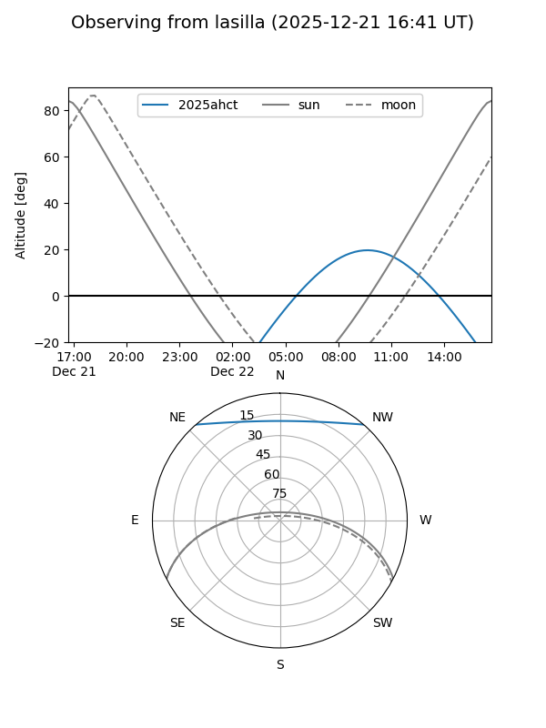
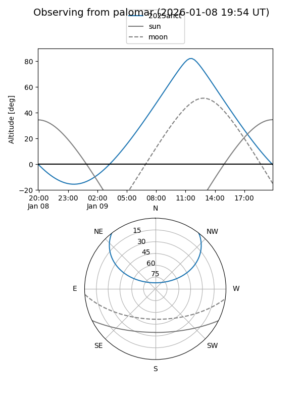

2025ahct
Target 2025ahct at 2025-12-31 16:59
Aliases and brokers:
FINK:
Lasair:
ALeRCE:
TNS:
YSE:
alt names
ZTF25achbstn (ztf,fink_ztf)
2025ahct (tns,yse)
Coordinates:
equatorial (ra, dec) = 165.0478,+41.20149
equatorial (HMS+DMS) = 11:00:11.48,+41:12:05.37
galactic (l, b) = (174.0778,+63.20621)
Flags:
Photometry:
last ztfg=19.82, ztfr=19.90
3 ztfg, 2 ztfr detections
Lightcurve

Visibility


Additional plots